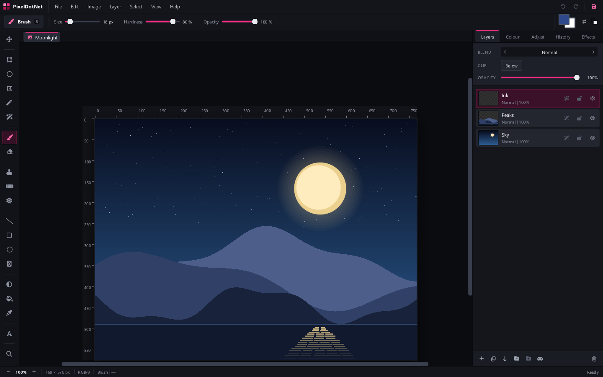

Free image editor · Windows, Linux, macOS
Make pictures. Keep your files.
Paint, retouch photos, cut things out, and add text in a friendly desktop editor. No account. No subscription. Nothing uploaded.
This guide is written in plain language. Pick a job below and follow the steps.

What do you want to do?
These are the things people open an image editor for. Each card takes you straight to a short, numbered recipe.
Remove something from a photo
Take out a person, a sign, or a distraction and rebuild what was behind it.
Show me how →Cut a subject out
Separate a person or object from the background and keep the edges soft.
Show me how →Add text to a picture
Place a title, add an outline, or make the letters curve around a badge.
Show me how →Make a black-and-white photo
Turn a colour photo into a clean grey image, or tint it with two colours.
Show me how →Resize a folder of images
Shrink, rename, and convert many pictures at once without opening each one.
Show me how →Draw or paint from scratch
Start with a blank canvas, sketch, colour, and add clean text on top.
Show me how →Free forever. Private by design.
PixelDotNet is free to use, and it will stay free. There is no paid version, no subscription, no account to create, no ads, and no telemetry. The program does not collect information about you or send usage data anywhere.
Every tool included
Nothing is locked behind a plan. The editor you download is the whole editor.
Nothing watching you
No analytics, no tracking, no “phone home”. Your work stays your work.
Your files stay yours
Images are opened and saved on your computer. There is no cloud folder and no upload button.
The only optional online action is adding a font from cdnfonts when you press Add Font in the Text tool. That is the only time PixelDotNet goes online.
Your first five minutes
If you have never used a layered editor, start here. This short exercise touches the brush, layers, undo, and saving — the four habits that make everything else easier.
- Look at the sample. PixelDotNet opens with the Moonlight image. It has three layers, so you can hide and show parts of the picture in the Layers panel on the right.
- Make a new layer. Press Ctrl+Shift+N, or choose Layer → New Layer. The new layer appears at the top of the list. Painting now happens on this layer, not on the original artwork.
- Pick the brush and a colour. Press B, then click a colour in the Colour tab. Drag on the canvas to paint. Press [ and ] to change the brush size.
- Undo without fear. Press Ctrl+Z. The stroke disappears. Undo is reliable, so experiment freely.
- Save the picture. Press Ctrl+S, choose PNG, type a name, and save. If you want to keep your layers for later, also choose File → Save Project….

A quick tour of the screen
There are six areas to know. Once these feel familiar, everything else is just choosing a tool and adjusting its options.
1. The menu bar
Across the top: File, Edit, Image, Layer, Select, View, and Help. Use these for opening and saving, resizing the picture, adding layers, and turning help on or off.
2. The options bar
The row under the menu belongs to the active tool. Select the brush and you get size, hardness, and opacity. Select the text tool and you get the font, size, alignment, effects, and colour. If a tool is not behaving the way you expect, look here first.
3. The tool rail
The narrow strip on the left holds every tool. Hover an icon to see its name. Most tools have a single-letter shortcut, such as B for the brush or E for the eraser.
4. The canvas
This is your picture. A checkerboard pattern means transparency — a see-through area, not white paint. Zoom with Ctrl and the mouse wheel. Pan by holding the space bar or the middle mouse button and dragging.
5. The side panel
The right side has five tabs: Layers, Colour, Adjust, History, and Effects. Layers is the one you will use most; the others are for choosing colours, changing tone, stepping back in time, and applying filters.
6. The status bar
The bottom edge shows the zoom level, picture size, colour under the pointer, active tool, and a short message about what just happened. If an action does not work, read the message here before trying anything else.
Where to find what you need
| I want to… | Go to |
|---|---|
| Follow a complete job from start to finish | Recipes |
| Paint, erase, draw shapes, fill areas, or place text | Painting |
| Cut something out or protect part of the image | Cutting out |
| Work with layers, groups, masks, styles, shapes, paths, or text | Layers & text |
| Change brightness, colour, or apply an effect | Colour & effects |
| Open, save, export, batch convert, or use SVG | Save & share |
| Look up a keyboard shortcut | Shortcuts |
Words you may hear
You do not need to memorise these. Come back when a word in the guide is unfamiliar.
| Word | Plain meaning |
|---|---|
| Pixel | One tiny coloured square in a picture. A 768 by 576 image contains 442,368 of them. |
| Layer | One sheet in the stack that makes up the picture. Each layer can be edited on its own. |
| Selection | A stencil that limits where your next edit can happen. |
| Mask | A black-and-white attachment to a layer that hides or reveals parts of it. It never destroys the pixels. |
| Opacity | How see-through something is. 100% is solid; 0% is invisible. |
| Blend mode | A rule for how a layer mixes with the layers below, such as Multiply or Screen. |
| Vector | Artwork described by shapes and lines rather than a grid. It stays sharp when scaled. |
| Shape layer | A rectangle, ellipse, line, or path you can still resize and recolour later. |
| Path | A set of points joined by straight or curved segments. Good for logos, outlines, and curved text. |
| Project file | A `.pxd` file that keeps every layer, mask, style, and editable element. |
| SVG | A file format for vector artwork. It opens in browsers and design programs. |
| Transparency | Empty space with no pixels. Shown on the canvas as a checkerboard. |
Help is built in
Tooltips are off by default so the interface stays quiet. Choose Help → Enable Tooltips to turn them on. Hover a tool or button to see its name; some controls also show a small chevron that opens a help card. You can turn them off again with Help → Disable Tooltips.